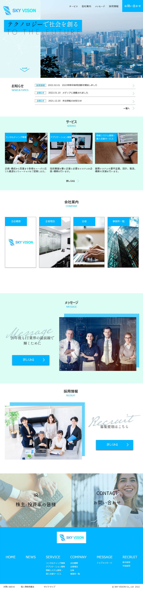
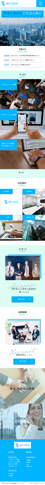

デザインカンプ
架空のIT企業のコーポレートサイトを制作しました。
コーポレートサイトを制作するにあたって、自分自身が知っている業界でないと作りづらいと感じたので「ソフトウェア開発を行っているIT企業」と設定しました。
全体を青や水色で統一しています。四角や線を使用することやキャッチコピーや見出し等のフォントには明朝体を使用することで、スタイリッシュさや、規律性・信頼性を表しました。
デザインカンプ作成：約4時間
修正：約1時間
合計：約5時間
ロゴのシンボルマークはは会社名の頭文字のSをモチーフにして制作しました。また、会社名であるSKY VISIONをイメージし、青のグラデーションで空を表現しました。
また、コーポレートサイトなので利便性を優先させるために、フッターにはすべてのページのナビゲーションを設置しています。
他にも、セクションごとに背景色（白、水色）を交互に変えることで、コンテンツの区切りの視認性を高めました。
コーディングすることを想定してデザインカンプを作成したので、少しシンプルになりすぎてしまったような気がします。
JSでの動きやをアニメーションなども意識しつつ制作していきたいと思いました。
Photoshop
PC
スマートフォン